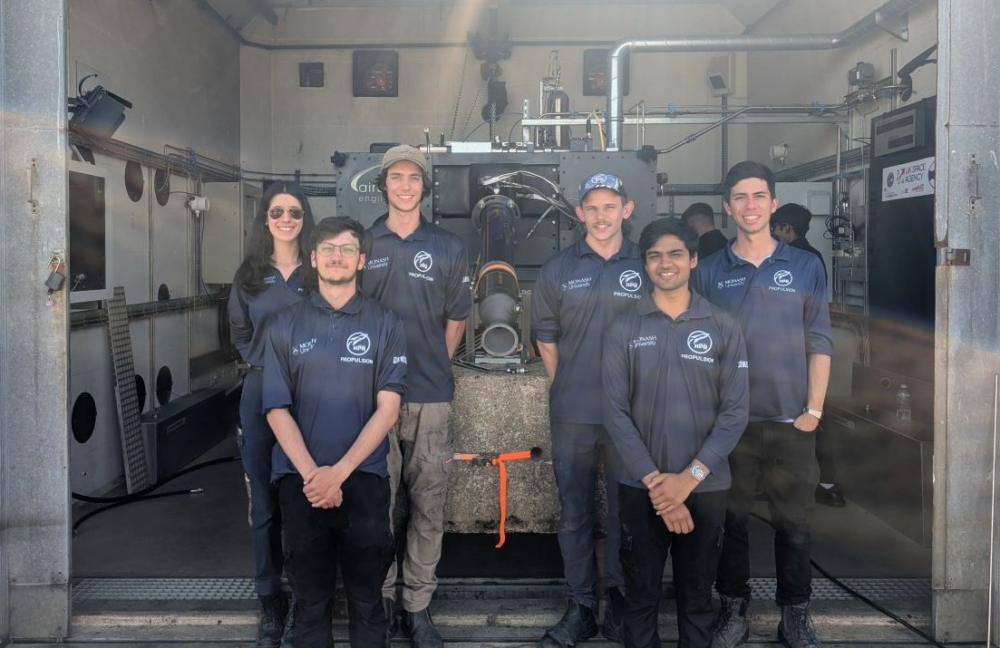
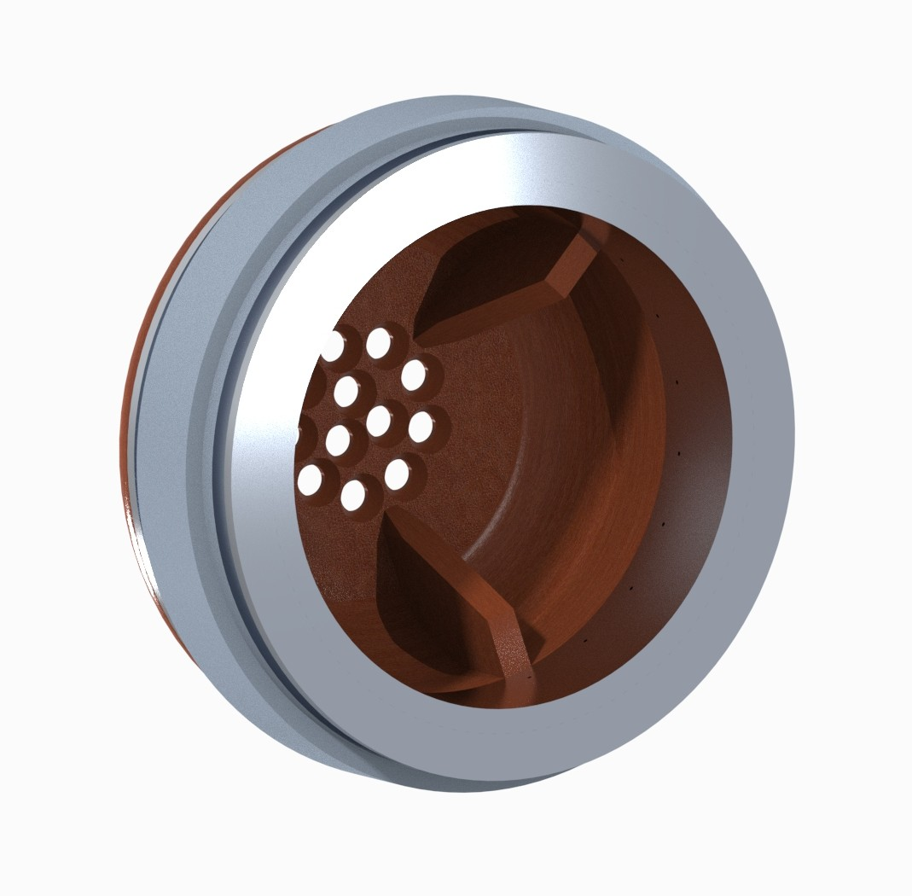
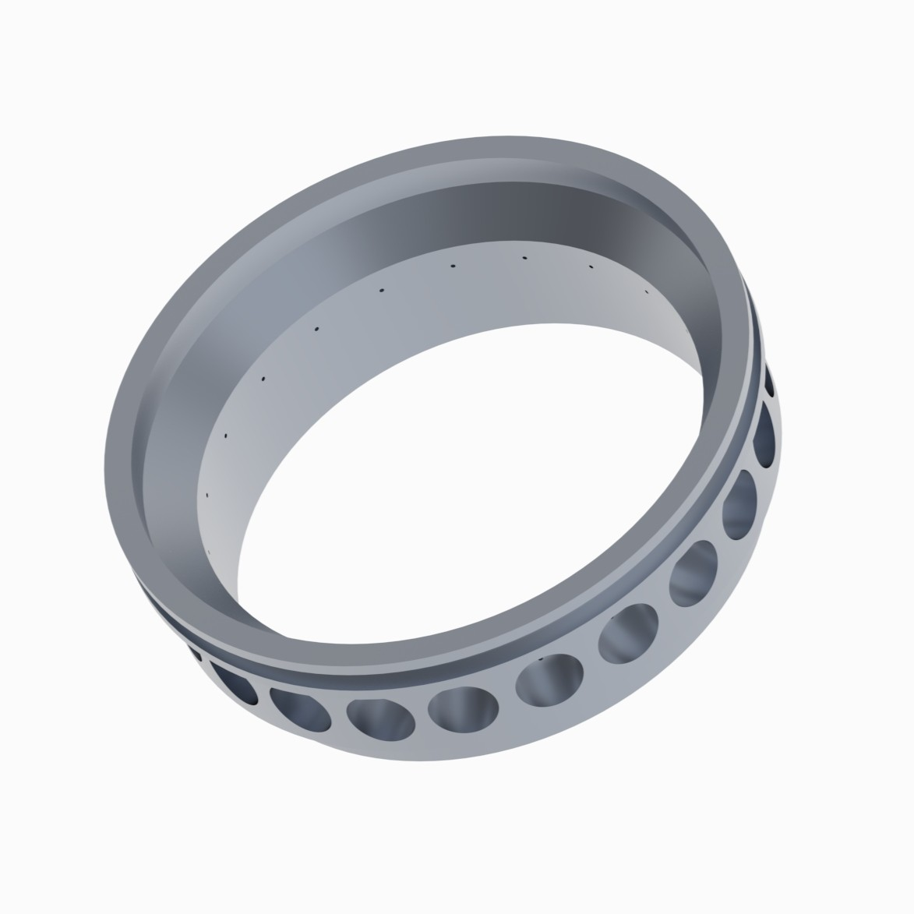
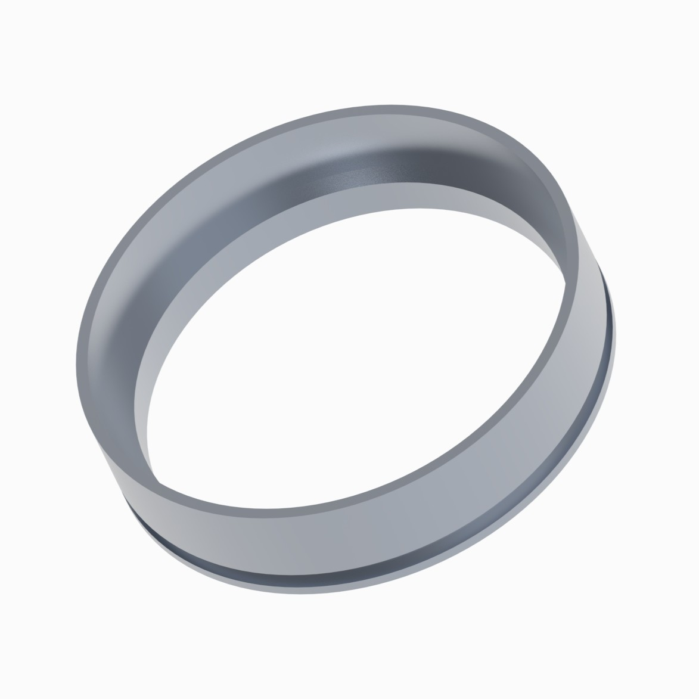
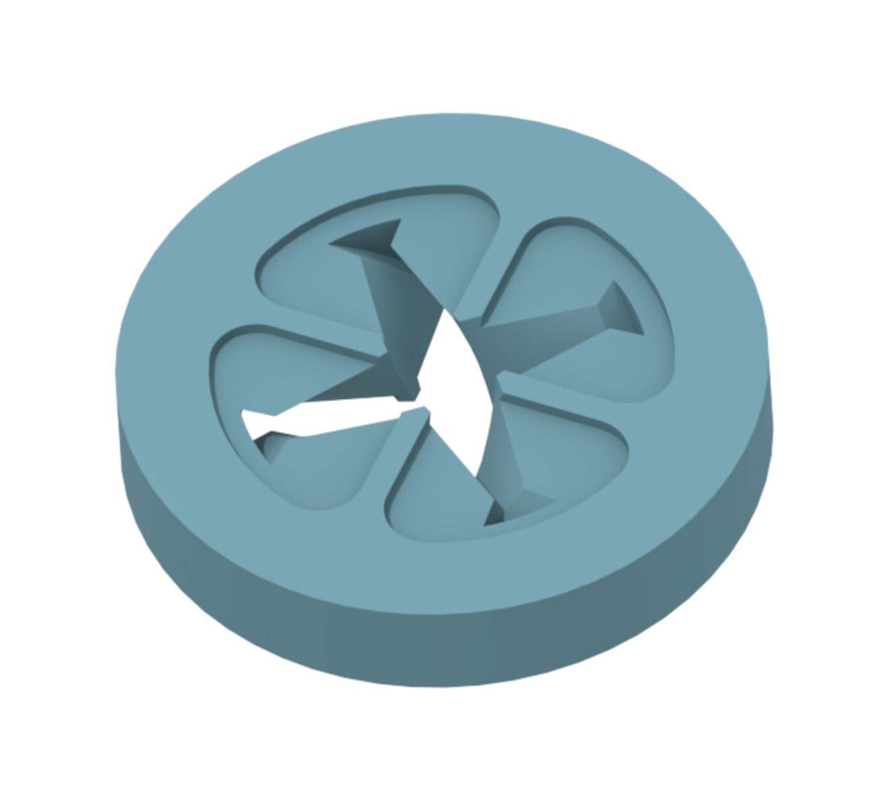
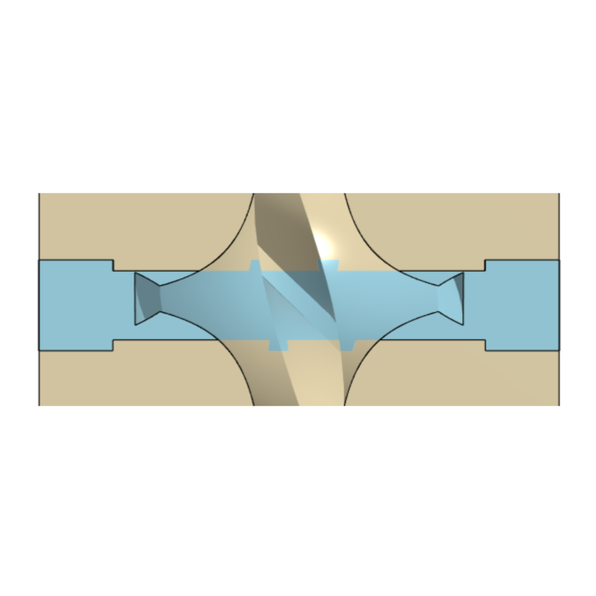

Overview
Solaris MkIII is a major milestone for our team: our first Liquid Oxygen (LOX) hybrid engine, targeting an ambitious 10 kN of thrust. Unlike our previous engines such as Solaris MkII, which operated at relatively low chamber pressures, Solaris MkIII's high chamber pressure introduced a critical new challenge, combustion stability. Tasked with the team's first-ever attempt at solving this, I was fully responsible for our stability architecture. Based on extensive literature review and simulation, I designed and integrated a complete suite of mitigation features, including injector-face baffles, Helmholtz resonators, and a fuel insert to ensure a stable and reliable burn.

Part Design


Helmholtz Resonators
To mitigate high-frequency acoustic modes, specifically a predicted 1400 Hz first longitudinal mode, I integrated an assembly of 20 Helmholtz resonators spaced evenly around the chamber. To ensure the components could withstand the thermal environment prior to machining the cavities, the resonators were hard anodised. Because conventional O-rings would not allow for individual cavity sealing, I designed the inner section as a strict press-fit against the shoulder, ensuring a clean interface essential for resonator performance.
Injector-Face Baffles
I designed a three-spoke phenolic baffle intended for use with a swirl injector. It targeted lower-frequency combustion instability modes and doubled as a pre-combustion chamber, simplifying the design and reducing part count. The top surface acted as an insulator to shield the forward closure from combustion gases, and the spokes were carefully tapered to avoid disrupting the oxidizer spray cones.
Fuel Inserts
To address low-frequency instabilities (typically under 100 Hz), I designed an interchangeable fuel insert with a 30% ABS infill, which was higher than the surrounding fuel grain's 20% infill. This difference in regression rates created a small step in the boundary layer as the fuel burned away, promoting more stable and controlled combustion.



